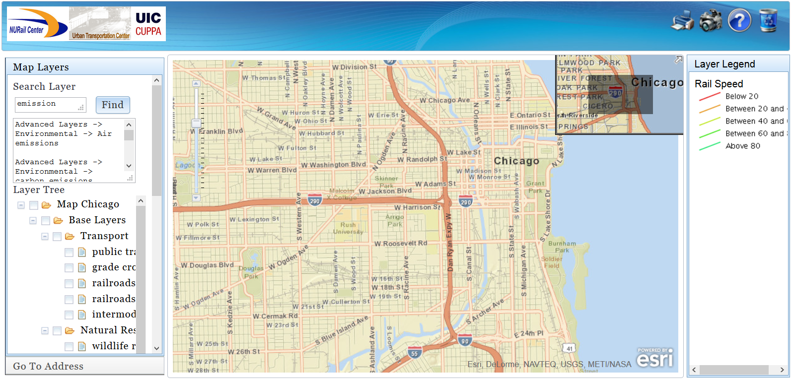

Environmental Impact Assessment of Rail Infrastructure in Illinois
This project provides a mapping tool and evaluation criteria that aim to increase the effectiveness and efficiency of environmental impact assessment of rail infrastructure. This tool can be used to identify high priority and sensitive areas for sustainable rail planning and management in Illinois. It may also help facilitate coordination between rail planning and operation departments. In addition, the results of this research will be accessible to the general public and researchers who are concerned about environmental impacts, community development, and social justice related to rail infrastructure in Illinois. If you would like to provide feedback on this project, please contact our team.
This research has incorporated current academic research findings, legislation and government guidelines in a comprehensive “Sustainable Rail Checklist.” The Checklist provides a systems view of sustainability for rail planning and management. The Checklist criteria evaluate the efficiency, safety, public health, ecological stress, emissions, and socioeconomic impacts of rail. The Checklist has been designed with two-tier approach. Users can choose to evaluate lower tier criteria (i.e., minimum regulatory requirements) or higher tier criteria (i.e., "best management practices”). Click the “Sustainability Checklist” tab to access the Checklist.
In reference to the "Sustainability Rail CheckList" developed, this project has integrated a spatial database and models to create an interactive mapping tool. The Interactive Map simulates and visualizes the potential environmental impacts of rail infrastructure at a refined geographical scale (e.g., the vicinity of grade crossings). It connects environmental impacts with neighbourhood background information (e.g., land uses, demography, and environmental quality) and rail system attributes (e.g., speed, traffic volume, and occupancy). Click the “Interactive Map” tab to access the web-based application tool. It allows users to zoom in to an area to view environmental, demographic and economic data. Users do not need GIS skills to generate customized maps.
Transportation professionals and environmental planners can use this application to consider a wide range of impacts early in the decision-making process, before significant funds and time have been devoted to project design. Under the National Environmental Policy Act (NEPA), proposed rail projects are subject to a lengthy and expensive environmental evaluation. The NURail GIS Project was conceived as a way to rapidly assess potential environmental impacts before engaging in a full NEPA review.
This project is hosted at the Urban Transportation Center (UTC) at UIC and supported by the National University Rail (NURail) Center . The NURail Center is a seven-university consortium of rail-focused, Tier-1 University Transportation Centers under the US Department of Transportation (DOT) Research and Innovative Technology Administration (RITA) program . Funding is also provided by the Canadian National Railway Company (CN) .
|
|
|
|
|